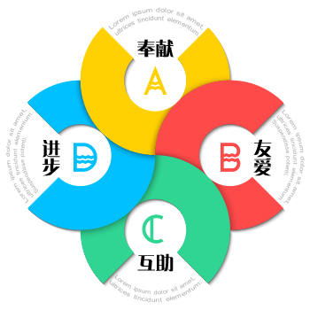

|
| 中国领先的社区综合服务平台

项目
PROJECTS
云生活 志愿服务站，是一个扎根社区、面向居民的综合服务平台。
目前已在全武汉市广泛布局，深入数十个社区。 荆门、黄石、鄂州等城市的服务站建设工作亦在推进当中。秉持“以人为本”和“可持续发展”的精神，云生活志愿服务站从改变居民生活方式切入，建立社区良性发展的闭环，推动智慧城市的建设。
线上支持
APP：既是社区活动发布、参与的平台，也是居民交流、互动平台；大数据分析，让你看见孩子每一步成长。
微信公众号：丰富生活内容直达用户；志愿者成长体系，发布、参与、打卡一键到位。
GIS研判中心：大数据沉淀、分析，一目了然洞悉社区变化、居民需求，根据数据不断改进服务质量，一个会成长的平台。
线下布局
云生活社区志愿服务站：云生活志愿服务站建在社区党群服务中心，是面向社区居民、助力社区发展的综合性服务平台。以公益为主导，服务站以线上线下结合的方式，为居民带来高质量的生活、教育服务，全面提升居民生活水平，打造新型和谐社区形象。
建设亚洲最大志愿者服务站：云生活正在计划搭建亚洲最大城市志愿者服务站，在城市全局的高度，建立城市文明形象的公益地标、志愿者反哺计划的实施窗口、
志愿者服务的便民中心、市民参与公益的集散平台。与社区服务站实现信息互通，构建志愿事业的智慧生态。
云智公益
搭建志愿者成长体系
“云生活志愿之城”项目被评为第十届武汉市宣传思想文化工作优秀创新项目。
志愿活动一键发布和参与、地理定位智能化打卡、完整记录志愿者历程，促进志愿服务的常态化、数据化、制度化。同时推进志愿者反哺计划，让志愿者的辛勤付出有所回报。目前，平台每月承载活动数百场，服务百万志愿者。
志愿者服务联盟
整合城市公益资源，搭建志愿者、志愿组织、爱心企业的信息平台。目前，吴天祥志愿者小组、武汉市小动物保护协会、长江救援志愿队等1500多家志愿者组织已入驻，当当网、京东、仟吉西饼、良品铺子、中粮集团等爱心企业提供价值千万的志愿者福利。
实体站点助力社区公益
线上成熟的平台配合，在社区布局志愿服务站，配备专员统筹协调，帮助建立和规范社区志愿者队伍，引导社会公益资源接入，提升志愿服务的质量、规模和深度。
云智教育
社区学堂简介
社区学堂融合“公益+趣味”，提供丰富多彩的趣味活动和亲子公益内容，提升孩子综合素质，让学习更有趣；社区学堂关注教学质量和服务，以专业化师资队伍，构建教学优势与管理体系，为家长减负，让学习更有效。
社区学堂优势
政府惠民•放心零距离：市委市政府重点惠民项目
免费托管•陪伴零距离：社区党群服务中心学习，随时接送、安全省时
亲子公益•志愿零距离：爱心从小培养，让孩子成为公益小达人
社区学堂•教育零距离：专业化师资队伍，社区班主任驻点服务
智能硬件•安全零距离：智能手环，超距预警，360°安全护航
线上互动•沟通零距离：微信、APP互动反馈，看见孩子每一步成长
公益托管班
拼图大冒险、快乐动动操、趣味创客营……有趣好玩的益智亲子活动，搭建家门口的快乐成长平台；国手乒乓班、艺术启蒙班、小小主持人……培养孩子兴趣爱好，全面提升综合素质。
© 2015 武汉云智互联科技有限公司·鄂ICP备15010914号